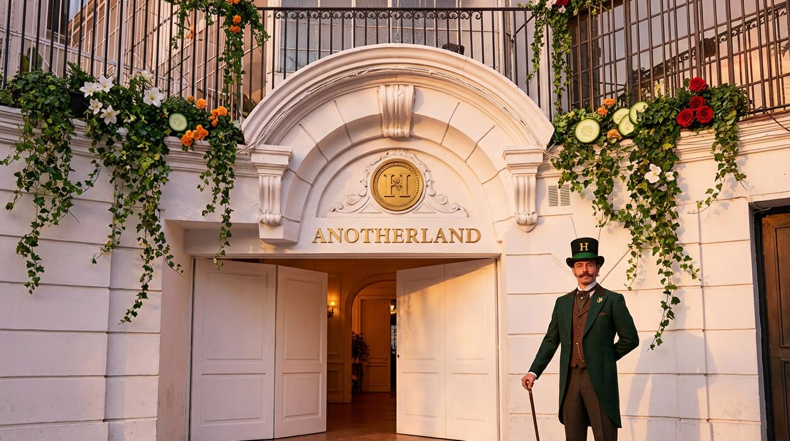
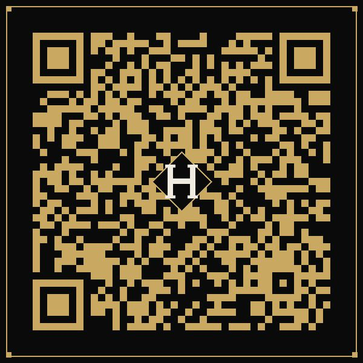
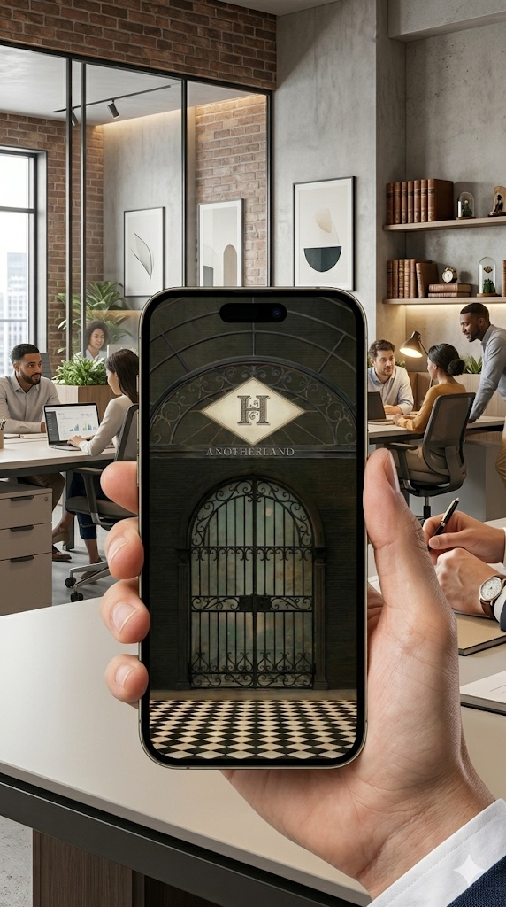
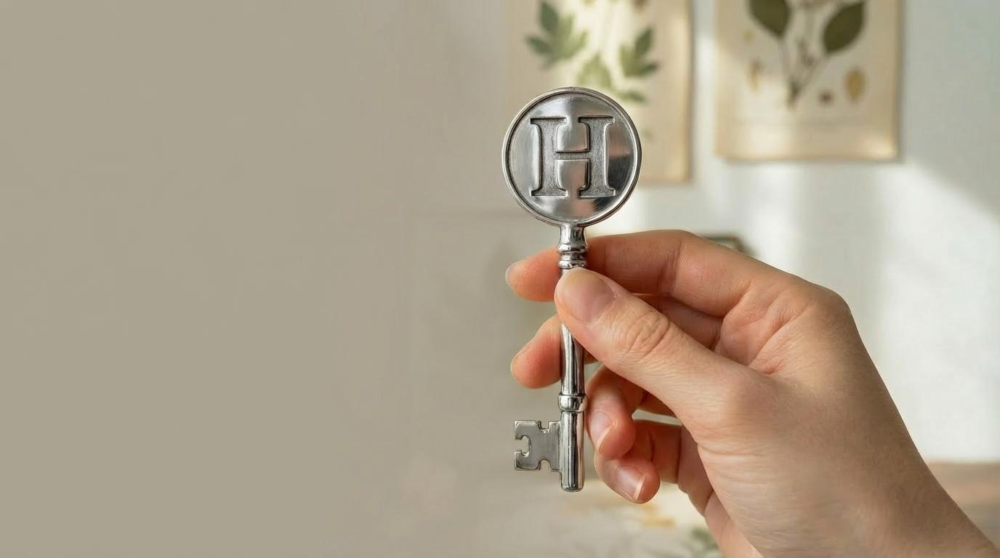
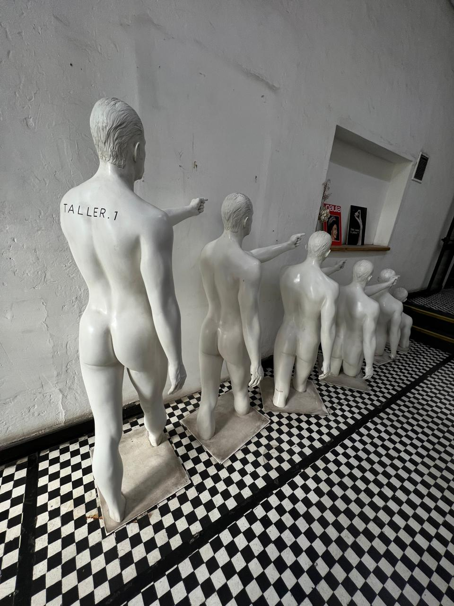
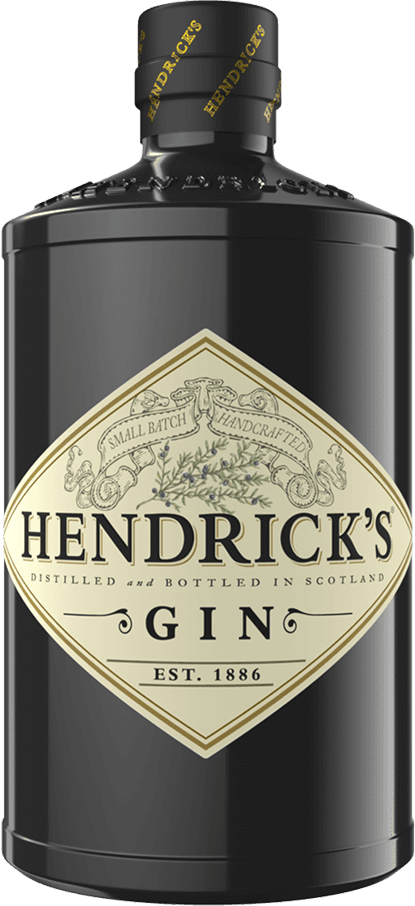
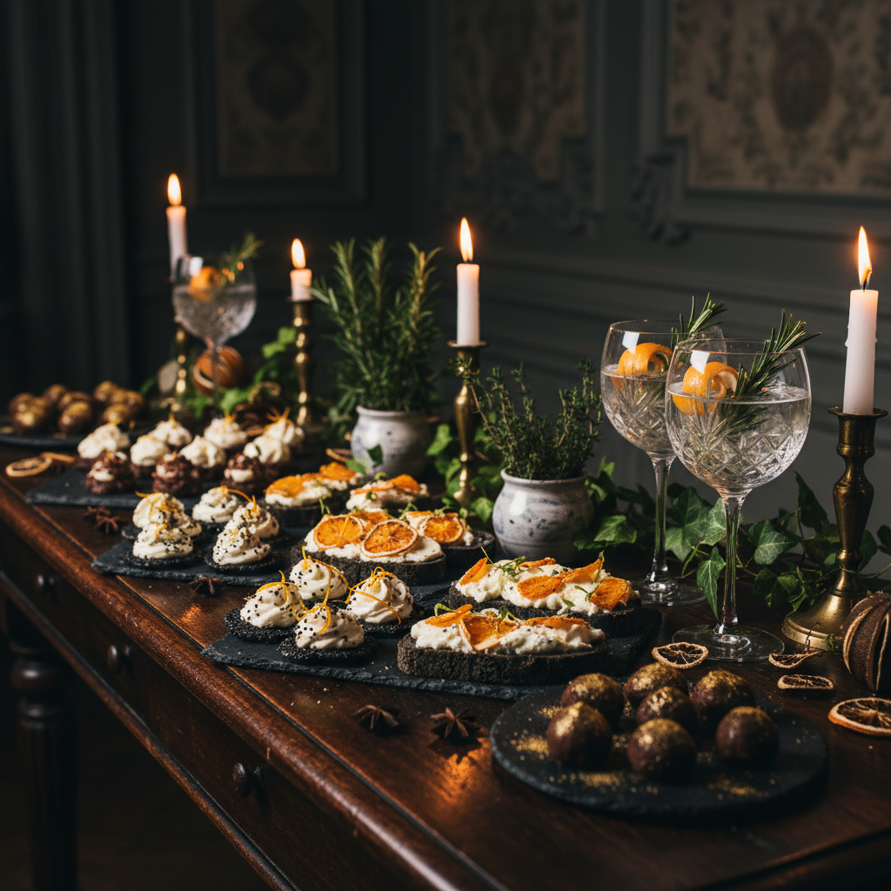
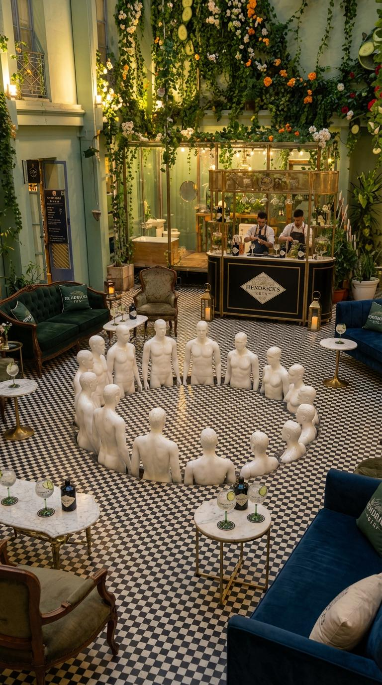
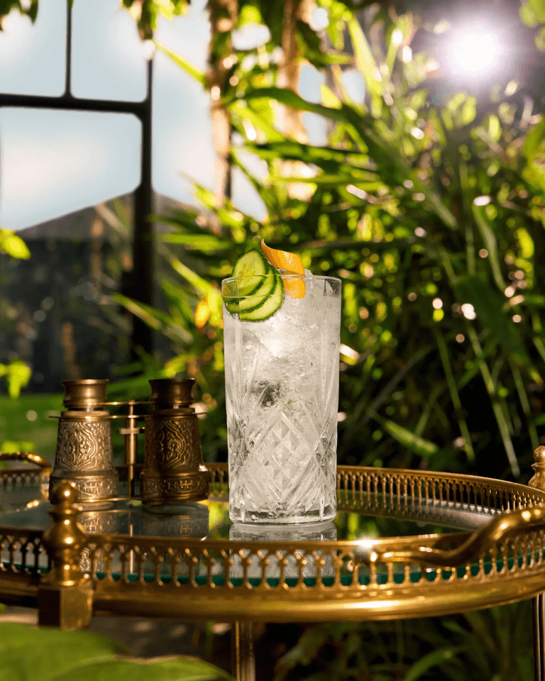
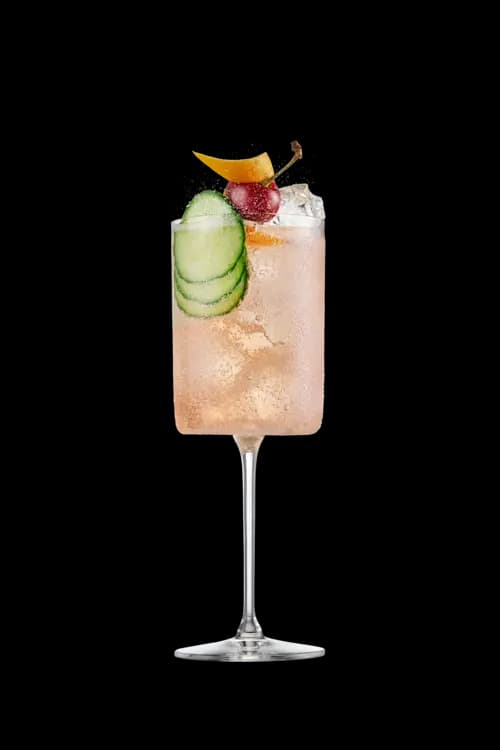

A proposal for
Welcome to Anotherland
The Launch of Hendrick's Another — Santiago de Chile
Scroll to begin the journey


A proposal for
The Launch of Hendrick's Another — Santiago de Chile
Hendrick's Another is not merely a new bottle — it is a permanent new expression infused with orange blossom and cacao, priced alongside the Original, with a perfect serve that marries tonic, cucumber, and orange.
This launch event in Santiago de Chile will amplify the arrival of Another to the Chilean market. An intimate, theatrical experience designed to be so extraordinary that those who attend cannot help but share it — and those who don't will wish they had.

The brand's DNA is already built on curiosity, the unusual, and the exclusive. Anotherland is naturally a FOMO experience.
Mystery Noise
Unexpected
Experience
Wow Moment
Awareness
Unveiling
Curated guest lists, selected invitation only. Only 40 souls may enter.
Not revealing everything, leaving people curious. The concept of "finding your other" makes people feel they're missing a part of themselves.
It's intimate. It's theatrical. It's unrepeatable. An experience inspired by the likes of Sleep No More.
100 selected influencers aligned to Hendrick's culture will receive a mysterious envelope — with no brand, no name, only curiosity.
Inside, aged parchment sealed with a botanical wax stamp bears a cryptic message — no invitation, no instructions, just enough to awaken something:
Anotherland awaits those
whose curiosity runs deeper
than the ordinary.If you dare find your other,
present your token
at the portal.
A hidden QR code, discoverable only to the truly curious, leads somewhere unknown. The main idea: they share this enigma with their followers, guessing what it could mean. Curiosity becomes the message itself.



We will personify one of the characters of Hendrick's Gin — a surreal figure with an oversized eye, adorned with roses — and take them into exclusive city spots, delivering invitations to selected people. Creating noise, sparking curiosity, planting the seeds of Anotherland in the real world.
Within Anotherland's 40 chosen souls, 6 guests belong to the gloriously unexpected — regular curious minds, selected from the wider world, who stumble into the extraordinary. Their unfiltered wonder becomes Hendrick's most authentic voice.
Scanning the invitation's QR code leads to a mobile landing page where visitors are invited to subscribe. After subscription, a live countdown timer, personalized welcome message, and queue notification sustain anticipation until Anotherland's exclusive portal officially opens.
48 hours before the event, 34 KOLs and 6 unusual people will receive a second mysterious envelope.
Inside: a confirmed time, an address, and a key — the only artifact that will grant passage through the portal into Anotherland.
No key, no entry. The chosen ones hold in their hands the only proof that this world exists.

The Key to Anotherland
After scouting different places that can inhabit the world of Hendrick's, Anotherland demands a stage worthy of its peculiar wonder. Deliberately selected beyond conventional hospitality venues, this hidden and exclusive space has been carefully unearthed.
 The Grand Conservatory — Main Hall
The Grand Conservatory — Main Hall
 The Portal — Entrance
The Portal — Entrance
 The Alembic — A Gin Still in Chile
The Alembic — A Gin Still in Chile
 The Origins — Act I Space
The Origins — Act I Space

The Passage — Between WorldsEvery corner will whisper of the unusual world of Hendrick's — a realm where the extraordinary hides in plain sight. The venue's own classical white busts, currently flanking the main entrance, will be relocated to the centre of the grand hall and arranged in a circular formation — silent witnesses to the night, creating a sculptural centrepiece that anchors the experience.
The brand's own assets become living scenography: vintage Hendrick's carts (2.30m tall, roofed) serve as mobile bar stations; metallic tubs and ice buckets overflow with fresh botanicals; the ornamental birdcage becomes an enigmatic prop; Moon Light lamps cast an amber glow; wooden Hendrick's crates and the signature flower wall complete the immersion — all drawn from the existing brand asset catalogue, ensuring budget efficiency while maintaining the authentic Hendrick's world.
The right space becomes a unique invitation itself, beckoning curious souls to abandon the ordinary day and step, gloriously, into Anotherland.
 The Vision — Taller 1 Transformed into Anotherland
The Vision — Taller 1 Transformed into Anotherland
To bring this event to life, we will deploy a dedicated team of performers as citizens of Anotherland. They will embody the storytelling, guide the experience, and ensure guests truly live and immerse themselves in this world.
The mysterious guardian at the portal. Asks for the key. Opens the door.
They welcome guests into Hendrick's Origins and narrate the tale of Anotherland.
Guides through the choices. They divide groups and present the four story crossroads.
The ethereal figures of Anotherland. They inhabit the space, creating moments of wonder.
Surreal silhouettes, edible accessories (the cucumber cluster), sculptural powdered wigs, contradictory tailoring, maximalist botanicals, subversive formalwear, fabric clashing, the porcelain doll effect, asymmetric volume, and iridescent surfaces.

The night arrives. The key turns. The portal opens.
A 3-Act Journey Into Anotherland
Guests Start Together
In the entrance, a mysterious guard stands before the door. Silent. Watchful. When guests present their key, the door opens — and the ordinary world is left behind.

After crossing the Portal, guests are welcomed by the Orators into Hendrick's Origins, where a gleaming copper Gin Alembic Still marks the beginning of their journey into Anotherland — beyond imagination and discovery.
A welcome serve of Hendrick's Original Gin & Tonic is poured as the tale begins.

The Orator introduces this as a journey through Anotherland, where the marvelous and the mundane intertwine. A plain wooden box is placed at the edge of the table — its purpose left unsaid.
Guests Roam Free

Our guests move through a large dark hall, guided by the Orators who divide them into groups. Along the way, they encounter the Botanics — and the tale of four story crossroads begins. Each choice shapes a unique cocktail, built through the narrative itself.
At the first crossroads, two waters shimmer:
Sets the base: herbal & contemplative or crisp & sparkling
Further along, the traveler encounters a chorus of talking flowers:
Adds the botanical accent: herbal brightness or floral sweetness
Through swirling mists, inspiration strikes. Two paths emerge:
The flavor flourish: dark & spiced or bright & citrusy
In a grove heavy with memory, the traveler must decide how to end their tale:
The garnish and mood: bold & nostalgic or light & liberating

Between choices, guests discover thematic food stations — artisanal canapés crafted in a striking palette of dark tones with orange accents. Each bite is a narrative moment, paired with botanical garnishes and crystal gin glasses catching the warm candlelight.
Between the choices and the revelation, a moment of sensory pause — two artisanal sorbets that bridge the world of Hendrick's Original and the mystery of Another.
Inspired by the Original's perfect serve — cucumber and Bulgarian rose. A cool, green, herbal palate cleanser that recalls the garden where Hendrick's began. Delicate, fresh, unmistakably classic.
Inspired by Another's signature infusion — orange blossom and cacao. A warm, amber-hued creation with citrus zest and dark chocolate depth. Bold, unexpected, unmistakably Another.

Two worlds. One extraordinary pause.
Guests End Together

Guests continue their path after the choices they've made. At the end of a darkened corridor, they find a figure seated in a bergère — silent, waiting.
As they approach, the figure rises. An invitation. In that moment, all the lights turn on — and Anotherland is revealed in its full, breathtaking glory.

When our guests enter Anotherland, they discover a captivating world to freely explore — the grand hall alive with botanical wonder, classical busts arranged in a ceremonial circle, and warm golden light flooding every corner. Every angle becomes an Instagrammable moment, ensuring each guest shares Anotherland with the world.

A beautifully dressed cocktail bar wrapped in botanical garlands serves Hendrick's Another cocktails — the gin's signature orange-tinted serve with cucumber ribbons. Victorian-attired bartenders craft each drink as part of the living experience.
Guests reunite around the previously hidden chamber. The Orator reveals the wooden box that held mystery all night — it opens to unveil Hendrick's Another, a gin uniquely infused with orange blossom and cacao.
Some of the white lights change to orange to enhance the moment and arrival. The cocktail built through the story is served.
"To Another, may we savor it always."
Experienced by few. Seen by many.
The story of Anotherland does not end at the venue. Within days of the event, the 60+ curious souls who received the mysterious invitation but were not among the chosen 40 will find a new delivery at their door.
A beautifully curated seeding box — containing a bottle of Hendrick's Another — arrives as proof that Anotherland remembers every curious soul.
They unbox it on camera. They share it with their followers. The hashtag #hendrickschile begins to spread. What was experienced by few is now seen by many — and the legend of Anotherland grows.

The Seeding Box — #hendrickschile
The traveler rises, carrying their glass and their journey through Anotherland forward. The Purveyor offers a keepsake token — bespoke to each guest and their pouch — as they exit back into the ordinary world, forever changed.


Built through the story itself

A parting gift of flavor
Santiago de Chile — June 2026
A proposal by WeAreVision
Federico Elgueta — Federico@wearevision.cl